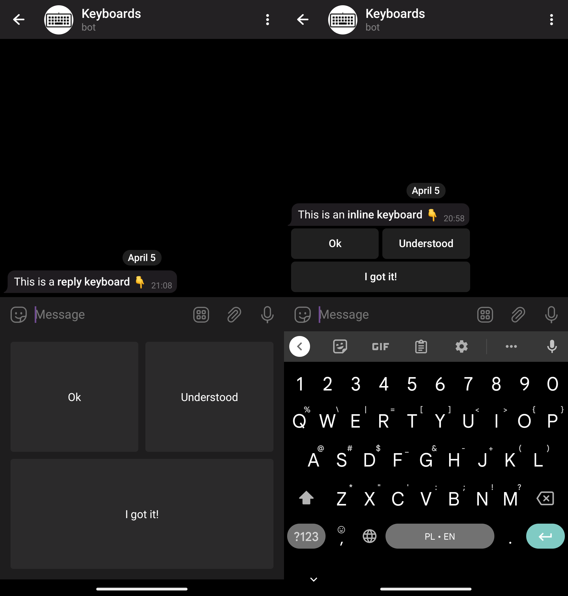
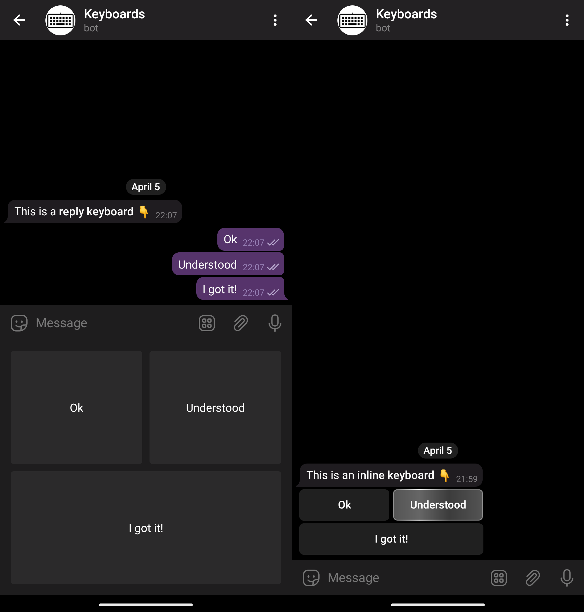
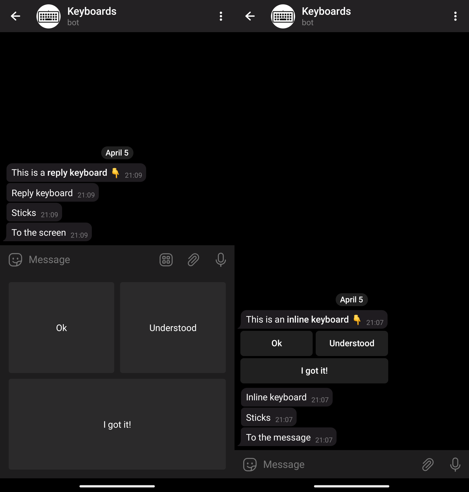
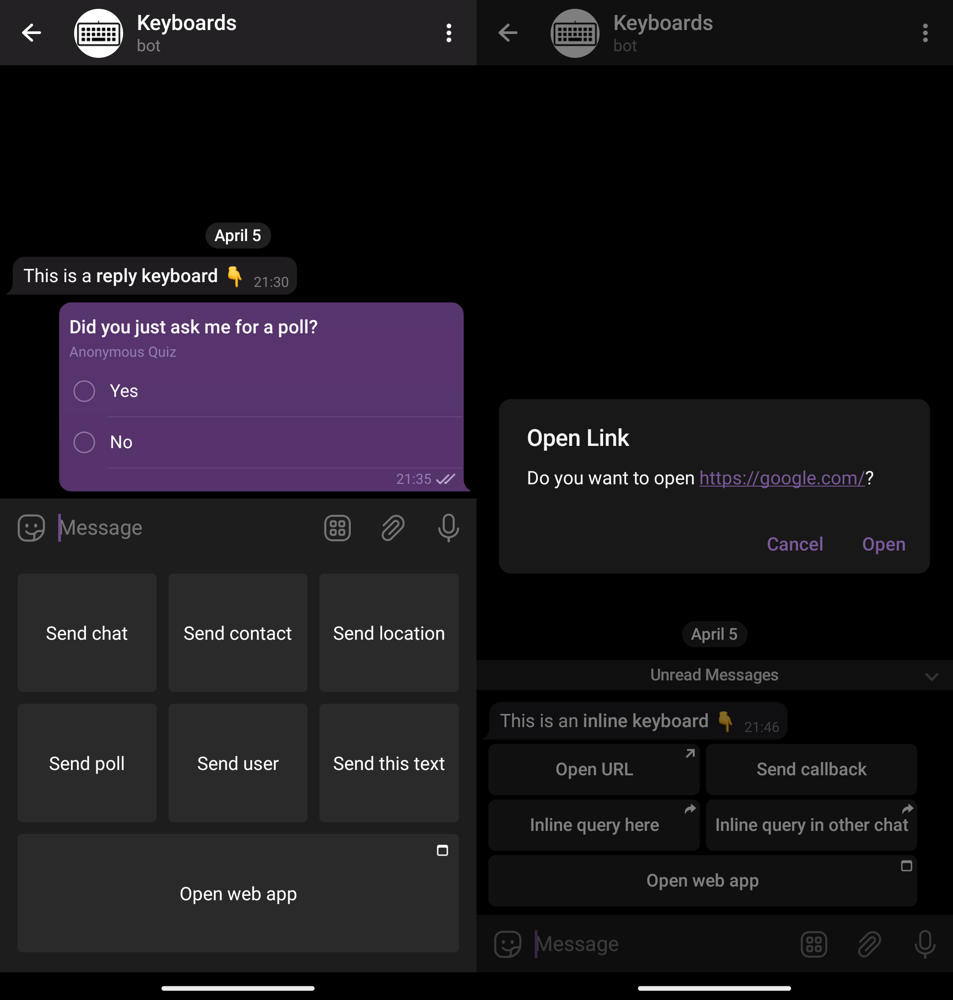
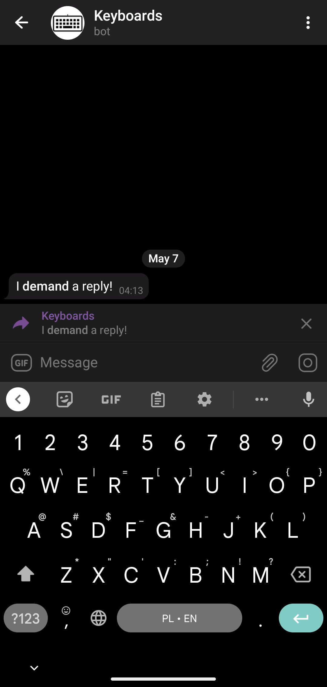
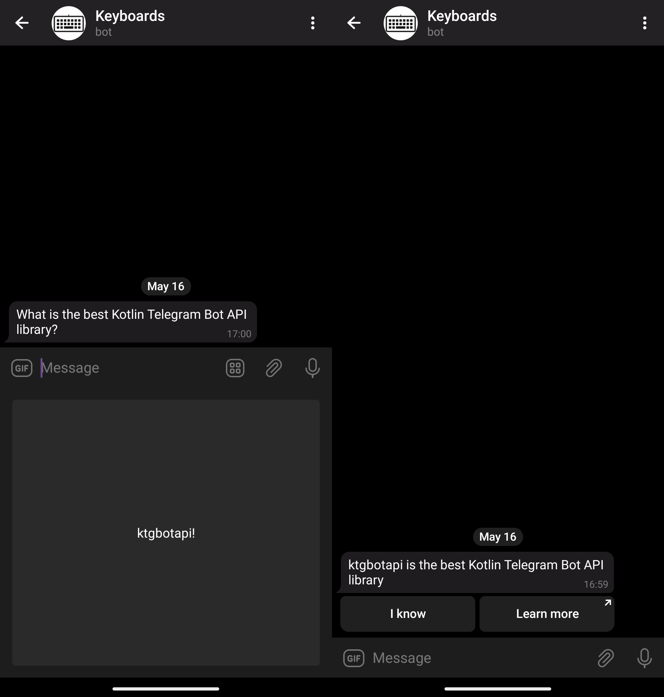
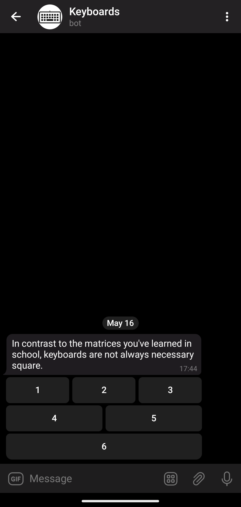

Keyboards Guide¶
This guide will help you choose the right keyboard for your needs and show you various API facilities available in the library to support your choice.
Introduction¶
Keyboard Types¶
The first thing you need to know is that there are two types of keyboards available in the Telegram Bot API: reply and inline keyboards.

Resize option
In the screenshots above (and in the most others) you may see usage of reply keyboards without resize_keyboard. In case you will use resize_keyboard = true the keyboard will be smaller.
Note the differences in the way these keyboards are shown to a user.
A reply keyboard is shown under the message input field. It replaces the device’s native input method on a mobile device.
An inline keyboard is shown as a part of the message in the chat.
Simple Keyboard Interactions¶
When a user clicks on a simple reply keyboard button, its text is just sent in the chat.
When a user clicks on a simple inline keyboard button, nothing is sent to the chat. Instead, a callback query (a fancy way to say “a request”) is sent directly to the bot and the button is highlighted. It will stay highlighted until the bot acks the callback.

It’s a common mistake to forget to handle callback queries
It leads to the buttons being highlighted for long periods of time, which leads to a bad user experience. Don’t forget to handle these callbacks!
As new messages arrive, a reply keyboard will stay there, while the inline keyboard will stick to the message and move with it.

Ups… The reply keyboard is now far away from the message it was sent with.
Actually, they are two different unrelated entities now: the original message and the reply keyboard. A reply keyboard persists until you explicitly remove it or replace it with a different one.
It’s a common mistake to forget to remove or replace reply keyboards
It leads to the keyboards being shown forever. Don’t forget to remove reply keyboards when you don’t need them anymore!
You also may use option one_time_keyboard and the keyboard will be automatically removed after user interaction
An inline keyboard could also be removed or changed by editing the original message it was attached to.
Extended Keyboard Interactions¶
Keyboards are not limited to text only. They could be used to ask users for different things, like payments, locations, phone numbers, etc. They could be used to open arbitrary URLs or web apps. Telegram clients process these buttons and interact with the users in the appropriate ways.
For the full list of options, see the official documentation on reply and inline keyboards.

Basic API & Classes¶
Now, that you know the basics, let’s see how to use the library.
Keyboards¶
In Telegram Bot API keyboards are sent to the user as a part of an interaction via the reply_markup parameter.
More specifically, this parameter is available:
- in the
sendXXXmethods, likesendMessage,sendPhoto,sendSticker, etc. - in the
copyMessagemethod - in the
editMessageXXXmethods, likeeditMessageText,editMessageCaption,editMessageReplyMarkup, etc. This also includesstopXXXmethods like thestopMessageLiveLocationmethod.
Tip
editMessageReplyMarkup is specifically designed to edit a message’s inline keyboard.
Sending inline keyboards is also supported in inline mode through the reply_markup parameter of the InlineQueryResult type and its inheritors.
However, this inline mode is unrelated to the inline keyboards.
The reply_markup parameter accepts four different types.
Two of them — ReplyKeyboardMarkup and InlineKeyboardMarkup — correspond to the reply and inline keyboards respectively.
The ReplyKeyboardRemove type is used to remove reply keyboards, but it’s not a keyboard itself.
The last one, ForceReply, is used to force users to reply to the bot.
It is not a keyboard either, but yet another dirty hack employed by the Telegram Bot API.

Now, in the library, the WithReplyMarkup is a marker interface for all the interactions which could have a replyMarkup (represents reply_markup) parameter.
It is extended by the ReplyingMarkupSendMessageRequest, and then, finally, by classes like SendTextMessage.
This, basically, corresponds to the Telegram Bot API.
Note
You may see all the inheritors of WithReplyMarkup interfaces in the corresponding KDoc
The other way to send a keyboard is through the replyMarkup parameter of the numerous extension methods, like sendMessage.
Those are just convenient wrappers around general interaction classes, like the aforementioned SendTextMessage.
Buttons¶
As we already know, keyboards consist of buttons.
Button classes reside in the dev.inmo.tgbotapi.types.buttons package.
The base class for the reply keyboard buttons is the KeyboardButton.
The base class for the inline keyboard buttons is the InlineKeyboardButton.
See their inheritors for the full list of the available buttons. The names are pretty self-explanatory and correspond to the Telegram Bot API.
For example, to send a simple reply keyboard button, use the SimpleKeyboardButton class.
To request a contact from the user through the reply, use the RequestContactKeyboardButton class.
To attach a URL button to the message, use the URLInlineKeyboardButton.
And to attach a callback button, use the CallbackDataInlineKeyboardButton.
You get the idea.
So, to send a reply keyboard use the following code:
bot.sendMessage(
chatId = chat,
text = "What is the best Kotlin Telegram Bot API library?",
replyMarkup = ReplyKeyboardMarkup(
keyboard = listOf(
listOf(
SimpleKeyboardButton("ktgbotapi"),
),
)
)
)
And here is how you send a basic inline keyboard:
bot.sendMessage(
chatId = chat,
text = "ktgbotapi is the best Kotlin Telegram Bot API library",
replyMarkup = InlineKeyboardMarkup(
keyboard = listOf(
listOf(
CallbackDataInlineKeyboardButton("I know", "know"),
URLInlineKeyboardButton("Learn more", "https://github.com/InsanusMokrassar/ktgbotapi")
),
)
),
)

When we’re done with this simple quiz, we can remove the keyboard with the following code:
bot.sendMessage(
chatId = chat,
text = "You're goddamn right!",
replyMarkup = ReplyKeyboardRemove()
)
Note
Don’t forget to remove the reply keyboards!
Matrices¶
Buttons in keyboards are arranged in matrices, i.e. two-dimensional arrays, or, to say in layperson’s terms, rows and columns. In contrast to the matrices you’ve learned in school, keyboards are not always necessarily square. Try it:
bot.sendMessage(
chatId = chat,
text = "In contrast to the matrices you've learned in school, keyboards are not always necessary square.",
replyMarkup = InlineKeyboardMarkup(
keyboard = listOf(
listOf(
CallbackDataInlineKeyboardButton("1", "1"),
CallbackDataInlineKeyboardButton("2", "2"),
CallbackDataInlineKeyboardButton("3", "3"),
),
listOf(
CallbackDataInlineKeyboardButton("4", "4"),
CallbackDataInlineKeyboardButton("5", "5"),
),
listOf(
CallbackDataInlineKeyboardButton("6", "6"),
)
)
)
)

This way of building matrices is not very convenient, so the library provides a few eloquent DSLs to simplify that.
First, there are matrix and row, so the keyboard above can be built like this:
bot.sendMessage(
chatId = chat,
text = "DSLs are sweet!",
replyMarkup = InlineKeyboardMarkup(
keyboard = matrix {
row {
+CallbackDataInlineKeyboardButton("1", "1")
+CallbackDataInlineKeyboardButton("2", "2")
+CallbackDataInlineKeyboardButton("3", "3")
}
row(
CallbackDataInlineKeyboardButton("4", "4"),
CallbackDataInlineKeyboardButton("5", "5"),
)
row {
+CallbackDataInlineKeyboardButton("6", "6")
}
},
)
)
Note
Those plus signs are mandatory.
Note
There are two different row functions here. Can you spot the difference?
A single-row matrix can be built with a flatMatrix:
flatMatrix {
+CallbackDataInlineKeyboardButton("1", "1")
+CallbackDataInlineKeyboardButton("2", "2")
+CallbackDataInlineKeyboardButton("3", "3")
+CallbackDataInlineKeyboardButton("4", "4")
+CallbackDataInlineKeyboardButton("5", "5")
}
But the most convenient way to build a simple keyboard is to use the constructor-like methods: InlineKeyboardMarkup and ReplyKeyboardMarkup.
Note, that they are named just like the corresponding constructor, but take a vararg of buttons.
They create flat matrices, i.e. single rows.
Keyboards DSL¶
Finally, there are inlineKeyboard and replyKeyboard
DSL methods above rely on Kotlin’s feature of receivers and extensions.
So, the magic is done by MatrixBuilder and RowBuilder.
That’s why you must use the plus sign to add buttons to the matrix: it’s just an overloaded operator call, another cool Kotlin feature widely used to create sweet DSLs.
Another bonus of using these DSLs is button builders, like payButton, dataButton, and urlButton:
bot.sendMessage(
chatId = chat,
text = "All in one!",
replyMarkup = InlineKeyboardMarkup(
keyboard = matrix {
row {
payButton("Send money")
dataButton("Ok", "ok")
urlButton("Google", "https://google.com")
}
},
)
)
Reply keyboard builders provide similar extensions, e.g.
requestLocationButton.
So, choose the style you like — from plain Kotlin lists to sweet DSLs — and use it!
Working with keyboards¶
Working with keyboards is not something special in Telegram Bot API. As you have already seen, keyboards are just message parameters. Similarly, keyboard interactions are represented by regular Updates. I.e. when a user interacts with a keyboard, the bot receives an update.
On the other hand, the library is heavily typed, so the actual type of update you would receive varies.
Reply keyboards¶
As it was said, reply keyboards cause Telegram clients to send regular messages back to the bot. Peruse this example:
bot.buildBehaviourWithLongPolling {
bot.sendMessage(
chatId = chat,
text = "👮 Turn in your accomplices or be prepared for a lengthy 🍆 incarceration ⛓ 👊 ‼",
replyMarkup = replyKeyboard {
+SimpleKeyboardButton(
"I ain't no rat! 🚫🐀🤐🙅"
)
+RequestUserKeyboardButton(
"Rat out 🐀 a friend 👤",
KeyboardButtonRequestUser.Common(RequestId.random())
)
+RequestChatKeyboardButton(
"Rat out 🐀 a group of friends 👥",
KeyboardButtonRequestChat.Group(RequestId.random())
)
}
)
onText { message: CommonMessage<TextContent> ->
assert(message.text == "I ain't no rat! 🚫🐀🤐🙅")
bot.reply(
to = message,
text = "Good, you're going to jail alone! ⛓🧑⛓",
replyMarkup = ReplyKeyboardRemove()
)
}
onUserShared { message: PrivateEventMessage<UserShared> ->
bot.reply(
to = message,
text = "Haha, you and you friend are both going to jail! ⛓👬⛓",
replyMarkup = ReplyKeyboardRemove()
)
}
onChatShared { message: PrivateEventMessage<ChatShared> ->
bot.reply(
to = message,
text = "Haha, now you're all going to jail! ⛓👨👦👦⛓",
replyMarkup = ReplyKeyboardRemove()
)
}
}.join()
Note
Read more about buildBehaviourWithLongPolling here
I hope you get the idea: the bot acts like a cop and asks the user to rat out his friends via a reply keyboard (it’s an imaginary situation, of course). The user may refuse to cooperate, rat out a single friend or the whole imaginary group. The bot receives the user’s choices as regular updates, the code above has explicit types (generally optional in Kotlin) and an assert to demonstrate this.
And here is how it works (the user selects the options in the order):
Note how you handle reply keyboards: you process regular messages. For instance, a simple text button sends a regular text message indistinguishable from a case when a user simply types the same text manually.
And don’t be a rat in real life: remove the keyboards with the ReplyKeyboardRemove after you’ve received the input!
Otherwise, a keyboard will stay there indefinitely.
Inline keyboards¶
Finally, to master the keyboards, you need to know how to handle the inline ones.
Again, let’s explore the example. Imagine you’re making a quiz where users are given a question and a set of answers. Additionally, users are given a link to the wiki page to help with the question and a Google button.
The quiz could be implemented this way:
// A simple data class to represent a question
val question = Question(
image = "https://upload.wikimedia.org/wikipedia/commons/a/a5/Tsunami_by_hokusai_19th_century.jpg",
question = "Who painted this?",
answers = listOf(
Answer("Hokusai", correct = true),
Answer("Sukenobu"),
Answer("Chōshun"),
Answer("Kiyonobu I"),
),
wiki = "https://en.wikipedia.org/wiki/Ukiyo-e",
)
bot.buildBehaviourWithLongPolling {
bot.sendPhoto(
chatId = chat,
fileId = InputFile.fromUrl(question.image),
text = question.question,
replyMarkup = inlineKeyboard {
// First row: answers
row {
for (answer in question.answers.shuffled()) {
dataButton(
text = answer.answer,
data = "${answer.answer}:${answer.correct}",
)
}
}
// Second row: help buttons
row {
urlButton("Wiki 💁", question.wiki)
webAppButton("Google 🔍", "https://google.com")
}
}
)
onDataCallbackQuery { callback: DataCallbackQuery ->
val (answer, correct) = callback.data.split(":")
if (correct.toBoolean()) {
bot.answerCallbackQuery(
callback,
text = "$answer is a ✅ correct answer!",
showAlert = true
)
} else {
bot.answerCallbackQuery(
callback,
text = "❌ Try again, $answer is not a correct answer…",
showAlert = true
)
}
}
}.join()
A few important things to note here.
First, the data buttons (they have the CallbackDataInlineKeyboardButton type, but in the code we used a neat DSL) must have unique data.
If the data is not unique, Telegram clients will highlight all the buttons with the same data when a user clicks on one of them.
Guess how I know that?
Well, it’s not in the docs, so trial and error is the only way to learn it (and many other things about the Telegram Bot API).
Second, the way you handle inline keyboards is different from the way you handle reply keyboards.
Bot API will send updates with a callback_query field populated.
This field, of a CallbackQuery type, represents incoming callbacks from callback buttons in inline keyboards.
The library turns them into multiple callback types, like the DataCallbackQuery we used in the example.
Finally, to handle these callbacks you could use onDataCallbackQuery.
Alternatively, if you’re not using any DSLs, you have to handle the CallbackQueryUpdate update type.
Third, the buttons got highlighted when a user clicks on them.
When you’re done with the callback, you need to answer it, by using the answerCallbackQuery function.
Otherwise, the button will remain highlighted.
Telegram clients will eventually remove the highlight, but it’s still frustrating.
Finally, you could choose between two styles of acknowledgment: a simple toast-like message or a modal alert.
The showAlert flag controls this behavior.
And here is the demo of the quiz:
Conclusion¶
Today we’ve learned how to use keyboards in Telegram bots. There are two types of keyboards: reply and inline. Reply keyboards replace the device’s keyboard and make clients send a message with the predefined content. Inline keyboards are buttons attached to messages. Clicking on them causes the client to send a callback to the bot. In both scenarios the bot receives an update of a corresponding type and has to acknowledge the keayboard interaction for the client to work properly.